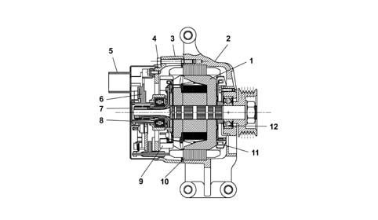
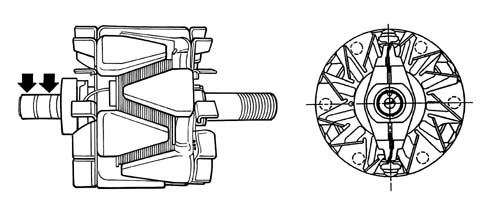
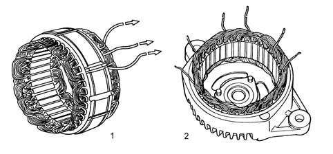
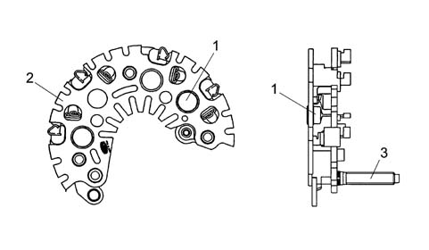
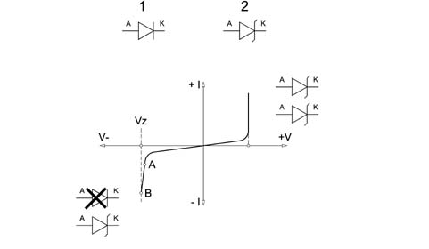
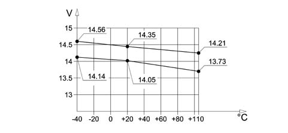

5530A alternator and components
- Path
- Descriptions > 55 ELECTRICAL EQUIPMENT > 5530 CURRENT GENERATOR > 5530A alternator and components
- Kind
- system description
- Applies to
- all engines; all production periods
- Interactive page
- https://sloeber94.github.io/elrnDB-fPnd/en/#/2750962
Applies to: all engines; all production periods
The alternator is a rotary machine which transforms mechanical energy into electrical energy.

1 - Rotor electro-magnetic circuit 2 - Control side support 3 - Rectifier side support 4 - Assembly bolts 5 - Heat shield cap 6 - Adjustment unit 7 - Manifold 8 - Rectifier side bearing 9 - Rectifier side internal fan 10 - Stator electronic circuit 11 - Control side internal fan 12 - Control side bearing
Applies to: all engines; all production periods
Like all electric machines, it basically consists of two parts: a rotor and a stator.
The diagram below shows the rotor for an alternator with internal ventilation.

Applies to: all engines; all production periods
Rotor
The rotor is composed of a cylindrical magnetic core, concentric to the drive shaft, which has a toroid coil and two opposing magnetic impellers which are magnetized by the winding in the actual core.
The impellers have six, claw-shaped, poles each, which interpolate reciprocally so that there are alternately six North poles and six South poles. There is therefore a single rotor winding which produces the e.m.f. for all the partial magnetic circuits.
Applies to: all engines; all production periods
Stator
The diagram below illustrates the stator.

1 - Star conection stator 2 - Triangular connection stator
Applies to: all engines; all production periods
Stator
This consists of a ring-shaped laminated group joined by two or more axial welding seams on the outside. It usually has thirty six grooves which contain the three-phase winding made from insulated copper wire with vinyl acetate and is connected, as necessary, by a star or triangular connection.
Applies to: all engines; all production periods
RECTIFIER BRIDGE
The diagram shows the rectifier bridge.

1 - Zener type power diode 2 - Dissipation plate 3 - Terminal B + alternator
Applies to: all engines; all production periods
BRIDGE SPECIFICATIONS
The bridge consists of:
- Zener diodes
- Diodes fitted on the dissipation plates electrically connected to the connection terminals with the phases.
- Dissipation plates.
- Large size dissipators.
- Phase insulation until the connection with the bridge through a rubber cable loom.
- Excess voltage limitation if the '+ battery' loads are disconnected guaranteed by the zener diodes.

1 - Normal diode 2 - Zener diode
Applies to: all engines; all production periods
Zener diodes
If the diodes are polarized directly they both allow the current to pass from the anode to the cathode (V+ I+): a zener diode therefore behaves like a normal silicon diode.
If polarized inversely, initially the current does not flow from the cathode to the anode up to Vz (V-I-).
Beyond Vz a normal diode is ruined, but a zener diode, on the other hand, continues to work normally because its resistance in these conditions decreases sharply. A zener diode is therefore a voltage stabilizer diode. On cars the voltage ranges from 4.7 to 24 Volt. It is one of the most important components in the regulation unit.
It is often used for protection against polarity inversion or excess voltage.
Applies to: all engines; all production periods
ALTERNATOR WITH INTERNAL VENTILATION SPECIFICATIONS
The main feature of this type of alternator, with a 115 mm diameter stator, is having dual internal ventilation with the vanes inclined to guarantee the maximum flow of air and, at the same time, limit noise.
Alternators with internal ventilation, for the same power supply, are smaller and lighter than types with external ventilation and satisfy all current application requirements (space in engine compartments is always at a premium). In addition to this, in terms of quality, these alternators are more reliable and durable than the best the competition currently has to offer on the market.
In depth studies and research have made it possible to introduce all the devices, in production, designed to limit the noise produced by various components (fluid dynamics, mangetic, mechanical).
Applies to: all engines; all production periods
TYPICAL VOLTAGE CURVE
The graph below shows a typical regulator voltage cuve.

Applies to: all engines; all production periods
ELECTRICAL SPECIFICATIONS
The electrical specifications are listed in the table below:
Petrol engines | Diesel | |||
|---|---|---|---|---|
Versions | ||||
1.1 8V | 1.2 8V | 1.2 8V Cond | 1.3 JTD | |
Rated voltage | 14V | 14V | 14V | 14V |
Rated current (1800/6000 Rpm) | 45/70A | 50/90A | 55/105A | 42/80A |
Continuous top speed | 18000 Rpm | 18000 Rpm | 18000 Rpm | 18000 Rpm |
Temporary top speed for 15' | 20000 Rpm | 20000 Rpm | 20000 Rpm | 20000 Rpm |
Electronic voltage governor code | RTM 151C | RTM 151C | RTM 151C | CP LOW END |
Radio anti-interference condenser | 2.2 F±10%63 V max | 2.2 F±10%63 V max | 2.2 F±10%63 V max | 1.5 F |
Rectifier bridge with power diodes type | Zener | Zener | Zener | Zener |
Standby current | 1.6 mA max | 1.6 mA max | 1.6 mA max | 1 mA max |
Maximum permitted current of loads between D+ and earth | 0.5A | 0.5A | 0.5A | - |
Inductor resistance | - | - | - | 2.1 OHM at 20° C |
Applies to: all engines; all production periods
With the alternator not working and the ignition key in the ON position, the body computer lights up the warning light in the instrument panel (NQS) and sends a power supply to the voltage regulator incorporated in the actual alternator via terminal D+.
In these conditions the energizing circuit (rotor) is enabled to earth by the regulator electronics.
With the alternator rotating through the effect of the alteration in the number of revs and the mangetic field, a three-phase alternating volage is produced in the electrical circuit (stator) which, rectified by the diode bridge, can come out of terminal B+.
The Facia node monitors the effiency of the alternator recharging system by recording the voltage signal from terminal D+ of the alternator.
Connection D+ is checked only with key ON; At Key-ON, as long as voltage D+ is lower than 5.5V ± 0.2 V, the Facia Node indicates hte low recharging status to the instrument Panel Node, which turns on the relevant warning light. If voltage D+ is higher than 5.5V ± 0.2 V, the NPL emits a signal to indicate recharging is proceeding correctly.
If voltage D+ drops below a threshold of 4.5V ± 0.2 V, the NPL issues an insufficient recharge signal.
If recharging signals are not present or irregular, carry out the following checks before dismantling the alternator:
- check belt tension;
- check the nut on the positive alternator terminal (B+) is tight and ensure the washer is present;
- check the nut on the excitation terminal (D+) is tight and ensure the washer is present;
- check that the nuts on the positive junction unit in the engine bay are tight;
- check the bolts securing the negative terminal to the body are tight;
- check the battery terminals are clean and fully tight;